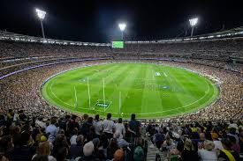

Melbourne, Australië
.svg)
Melbourne is de hoofdstad van de deelstaat Victoria en de op een na grootste stad van Australië, met een bevolking van ongeveer 5 miljoen inwoners. De stad ligt aan de kust van Port Phillip Bay en staat bekend als de culturele en sportieve hoofdstad van het land. Melbourne is beroemd om zijn gevarieerde keuken, levendige kunstscene en Europese sfeer.
Bezienswaardigheden
Federation Square
.jpeg) Het centrale plein van Melbourne met moderne architectuur.
Thuisbasis van culturele evenementen, musea en restaurants.
Royal Botanic Gardens
Het centrale plein van Melbourne met moderne architectuur.
Thuisbasis van culturele evenementen, musea en restaurants.
Royal Botanic Gardens
Royal Botanic Gardens
Een uitgestrekt park met duizenden plantensoorten. Perfect voor een ontspannen wandeling of een picknick. Great Ocean RoadGreat Ocean Road
 Een van de mooiste autoroutes ter wereld, vlak buiten Melbourne.
Hoogtepunten zijn de Twelve Apostles en spectaculaire kliffen.
Melbourne Cricket Ground (MCG)
Een van de mooiste autoroutes ter wereld, vlak buiten Melbourne.
Hoogtepunten zijn de Twelve Apostles en spectaculaire kliffen.
Melbourne Cricket Ground (MCG)
Melbourne Cricket Ground (MCG)
 Een iconisch stadion en een must-see voor sportliefhebbers. Gastheer van cricketwedstrijden, Australian Rules Football (AFL) en concerten. National Gallery of Victoria (NGV)national Gallery of Victoria
Het oudste openbare kunstmuseum van Australië. Bevat zowel Australische als internationale kunstcollecties.Activiteiten
-
Koffiecultuur verkennen: Melbourne staat bekend om zijn uitstekende koffie. Bezoek de vele cafés in steegjes zoals Degraves Street.
Laneways en Street Art: Wandel door de smalle straatjes en ontdek kleurrijke straatkunst en verborgen bars.
Sportwedstrijden bijwonen: Melbourne organiseert grote sportevenementen zoals de Australian Open (tennis) en de Melbourne Cup (paardenrennen).
Eten en drinken: Proef gerechten van over de hele wereld in diverse eetgelegenheden, van fine dining tot foodtrucks.
Tramrit maken: Stap in de gratis City Circle Tram om een rondleiding door de stad te krijgen.